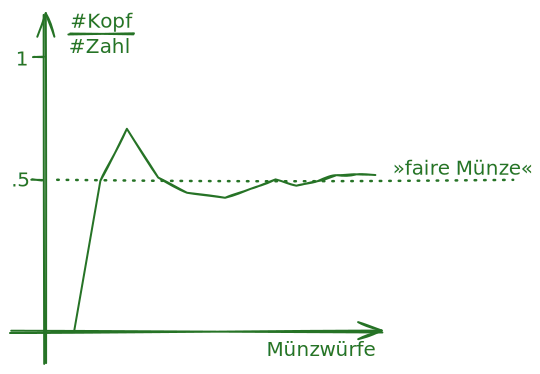
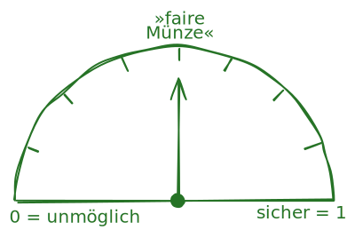

![]()
Erkenntnisinteressen
Ganz grundlegend kann a priori das Erkenntnisinteresse von Studien in die folgenden vier Kategorien unterschieden werden:
| Deskriptiv | Explorativ | Explanativ | Prädiktiv |
|---|---|---|---|
| populationsbeschreibend | hypothesengenerierend | hypothesenprüfend | Datenpunkte vorhersagend oder imputierend |
| Bei welchem Anteil 15-Jähriger in Deutschland handelt es sich um funktionale Analphabet:innen? | Was sind potentielle Ursachen für genderbezogene Disparitäten im Analphabetismus? | Sind 15-jährige Jungen häufiger Analphabeten als 15-jährige Mädchen? | Mit welchen Variablen können Schüler:innen at risk erfolgreich identifiziert werden? |
Übersicht: Bayesianisches und frequentistisches Schätzen und Testen
Eine sehr heuristische Klassifikation inferenzstatistischer Verfahren stellt die Unterscheidung von statistischer Schätzung und Testung dar:
(Inferenzstatistische) Schätzungen (estimation with quantified uncertainty) treffen anhand von Stichproben Aussagen über Parameter der Grundgesamtheit (Population) aus der die Stichprobe gezogen wurde.
(Inferenzstatistische) Hypothesentests bewerten anhand von Stichprobendaten die Gültigkeit von Hypothesen in der Grundgesamtheit (Population) aus der die Stichprobe gezogen wurde.
Diese beiden Verfahren können sowohl im Rahmen der frequentistischen Statistik als auch der bayesianischen Statistik angewendet werden. Die folgende Tabelle gibt einen Überblick über die wichtigsten Werkzeuge:
| Frequentistische Statistik | Bayesianische Statistik | |
|---|---|---|
| Parameterschätzung | Konfidenzintervalle | Posterior Distributions |
| Hypothesentest | p-Werte & ROPE CI-Procedure | Bayes Faktoren & ROPE-CrI Procedure |
Hypothesenarten & Informationsgehalt
Bayesianische wie frequentistischen Hypothesentests können unterschiedliche Arten von Hypothesen zugrunde gelegt werden:
- Punkthypothesen setzen Parameter gleich einer reellen Zahl; etwa \(H_0\text{: } \delta = 0\)
- Äquivalenzhypothesen nehmen Parameter in einem reellen Intervall an; etwa \(H_0\text{: } \delta \not\in\ [-.3, .3]\)
- Informative Hypothesen nehmen eine Ordnungsrelation mehrerer Parameter an; etwa \(\mu_{\text{Baseline}} < \mu_{\text{Imaginary Pill}} < \mu_{\text{Blinded Placebo}}\) (Buergler et al., 2023)
Die Art der (falsifizierten) Hypothese entscheidet oft wesentlich stärker über den Informationsgehalt eines Hypothesentests als die Entscheidung für das frequentistische oder bayesianische Paradigma (Hoijtink, 2012; Scheel et al., 2021).
Dies ist am leichtesten anhand der Nullhypothese nachvollziehbar. Wird etwa die Nullhypothese \(H_0\text{: } \delta = 0\) verworfen, wird entsprechend die Alternativhypothese \(H_A\text{: } \delta \neq 0\) angenommen. Diese enthält aber quasi keine Information, da sie nur mit einer einzigen Beobachtung (d = 0.000000 …) verworfen werden kann und im kritischen Rationalismus gilt, dass eine Aussage umso mehr Information enthält, umso leichter sie verworfen werden kann (Döring & Bortz, 2016).
Äquivalenzhypothesen können sowohl frequentistisch (z.B. TOAST-Prozedur in R und JASP, Lakens, 2017) wie bayesianisch (z.B. ROPE-Ansatz Kruschke, 2015) getestet werden. Für das Testen informativer Hypothesen liegen bayesianische Methoden in (u.a.) JASP und R vor (z.B. {bain}, Gu et al., 2019) sowie in den frequentistischen R-Pakete {restriktor} (Vanbrabant, 2020) und {ic.infer} (Grömping, 2010).
Frequentistisches Testen
Was sind p-Werte?
In den Sozialwissenschaften sind p-Werte das wohl verbreitetste inferenzstatistische Tool. Während Ronald Fisher (1925) die p-Werte als graduelles Maß für die Evidenz gegen eine Nullhypothese (Punkthypothese) entwickelte, kombinierten Jerzy Neyman und Egon Pearson (1933) dieses Konzept mit dem von ihnen entwickelten Hypothesentest-Framework (\(\alpha\)- und \(\beta\)-Fehler etc.).
Beispielhafte p-Wert Berechnung
Angenommen wir haben die folgenden Hypothesen & Daten:
- Hypothesen
- Nullhypothese:
Der Anteil der Befürworter*innen von G9 (vs G8)≤ 50%. - Alternativhypothese:
Mehr als 50% der Eltern befürworten G9 (vs G8).
- Nullhypothese:
- Daten:
- 3 »für G9«
- 1 »für G8«
{kind=link}
Typische p-Wert-Fehlkonzepte
In der Praxis wird jedoch häufig eine Mischung aus beiden Ansätzen verwendet, was zu Missverständnissen und Fehlinterpretationen führen kann Greenland et al. (2016). z.B.:
The P value is the probability that the test hypothesis is true ❌
The P value for the null hypothesis is the probability that chance alone produced the observed association ❌
A significant test result (\(P \leq .05\)) means that the test hypothesis is false ❌
A nonsignificant test result (\(P > .05\)) means that the test hypothesis is true or should be accepted ❌
A large P value is evidence in favor of the test hypothesis ❌
Lack of statistical significance indicates that the effect size is small ❌
Parameterschätzung
Wahrscheinlichkeitsbegriffe
In der frequentistischen Statistik wird Wahrscheinlichkeit als der Grenzwert der relativen Häufigkeit eines Ereignisses in unendlich vielen Wiederholungen eines Zufallsexperiments konzeptualisiert. Demgegenüber wird in der bayesianischen Statistik Wahrscheinlichkeit als Maß für die Sicherheit des eintreten eines Ereignisses verstanden.
| Frequentistisch | Bayesianisch |
|---|---|
| Eine faire Münze hat eine Wahrscheinlichkeit von 0.5 für »Kopf«, weil bei unendlich vielen Würfen der Anteil der »Kopf«-Würfe gegen 50% konvergiert. | Eine faire Münze hat eine Wahrscheinlichkeit von 0.5 für »Kopf«, weil 0,5 die Mitte zwischen »vollkommen sicher Kopf« und »vollkommen sicher Zahl« ist. |
|  |  |
Aus diesen unterschiedlichen Wahrscheinlichkeitsbegriffen ergeben sich in der frequentistischen und bayesianischen Statistik unterschiedliche Interpretationen von Unsicherheiten in der Parameterschätzung die oft als Konfidenzintervalle (frequentistisch) bzw. Credibility Intervalle (bayesianisch) operationalisiert werden.
Bayesianische Parameterschätzung (Credibility Intervalle)
Credibilityintervalle werden dann aus dieser Posteriorverteilung abgeleitet. Um Parameter eines statistischen Modells (z.B. Intercept und Slope in einer Regressionsanalyse, Anteil \(\theta\) an G9 Befürworter:innen) zu schätzen, wird im bayesianischen Paradigma die a priori Annahme über die Verteilung des Parameters (Prior) mit den vorliegenden Daten (Likelihood) kombiniert, um via des Satz von Bayes eine a posteriori Verteilung des Parameters (Posterior) zu erhalten. Aus dieser lässt sich dann sowohl die Punktschätzung (z.B. »Maximum a Postiori«), als auch dessen Unsicherheit (z.B. »Highest Density Intervals«) ableiten.
Credibilityintervalle um Parameterpunktschätzungen enthalten entlang der bayesianischen Wahrscheinlichkeitsdefinition Aussagen darüber, mit welcher Wahrscheinlichkeit der wahre Parameterwert in einem bestimmten Intervall liegt.
Frequentistische Parameterschätzung (Konfidenzintervalle)
Konfidenzintervalle um Parameterpunktschätzungen enthalten entlang der frequentistischen Wahrscheinlichkeitsdefinition Aussagen darüber, welcher Anteil von Konfidenzintervallen (in the long run) den wahren Parameterwert enthält.

Die ROPE-Testing-Prozedur
Sowohl Credibilityintervalle als auch Konfidenzintervalle können genutzt werden, um Äquivalenzhypothesen zu testen. Hierzu wird ein sogenanntes ROPE (Region of Practical Equivalence) definiert, das den Bereich von Parameterwerten beschreibt, die als praktisch äquivalent zur Nullhypothese angesehen werden (z.B. Bevölkerung ist »quasi unentschieden so lange \(.47 < \theta_{pro\,G9} < .53\))«. Die Lage des Credibility- bzw. Konfidenzintervalls in Bezug auf das ROPE entscheidet dann über die Evidenz für oder gegen die Äquivalenznullhypothese:
| Lage | Testentscheidung |
|---|---|
| CI bzw. CrI vollständig innerhalb ROPE | \(H_0\) annehmen |
| CI bzw. CrI vollständig außerhalb ROPE | \(H_1\) annehmen |
| sonst | inkonklusiv |
Bayes Faktoren
Bayes Faktoren sind ein zentrales Werkzeug der bayesianischen Statistik zur Bewertung von Hypothesen anhand von Daten. Sie quantifizieren die relative Evidenz, die die Daten für eine Hypothese im Vergleich zu einer anderen Hypothese liefern. Ausgangspunkt ist dabei das Bayes Theorem, das zwei eine bedingte Wahrscheinlichkeit eines datengenerierenden Modells \(\mathscr{M}_1\) gegeben Daten \(d\) mit der umgekehrten bedingten Wahrscheinlichkeit der Daten gegeben dem Modell relationiert:
\[P\left(\mathscr{M}_1 \mid d\right)=\frac{p\left(d \mid \mathscr{M}_1\right) P\left(\mathscr{M}_1\right)}{P(d)}\]
Wendet man dieses Theorem auf ein konkurrierendes Modelle \(\mathscr{M}_1\) an und betrachtet die posterior Odds \(\frac{P\left(\mathscr{M}_1 \mid d\right)}{P\left(\mathscr{M}_0 \mid d\right)}\), so erhält man die Definition des Bayes Faktors \(BF_{10}\):
Er heisst also »Faktor«, weil er multipliziert mit den a priori zu bestimmenden Prior odds multipliziert, die posterior odds ergibt. Der Bayes Faktor quantifiziert also, wie stark die Daten die a priori relative Plausibilität zweier Modelle verändern/updaten.
Beispielhafte Bayes-Faktor-Berechnung
Besonders einfach sind Bayes Faktoren für Punkthypothesen zu berechnen. Wichtig ist dabei, dass »Hypothese« und »datengenerierendes Modell« hier oft synonym verwendet werden.
Bayesfaktoren mit a priori Verteilungshypothesen
Die zuvor gemachten Hypothesen (Punkthypothesen: »genau 40%« bzw. »genau 60%«) sind in der Praxis eher selten bzw. unnütz. Wesentlich realistischer ist es a priori Hypothesen/Modelle anzunehmen, die verschiedenen Prozentsätzen verschiedene Plausibilität zuordnen (siehe folgende interaktive App oben). Dies kann durch die Angabe von Wahrscheinlichkeitsverteilungen (z.B. Beta-Verteilungen im Fall von Anteilen) erfolgen. Das Problem ist nun, dass man den Bayes Faktor nicht mehr wie zuvor berechnen kann, weil man ja keinen festen Wert/Prozentsatz für die Hypothese hat - man weiß nicht »welche Wahrscheinlichkeit man an das Bäumchen schreiben soll«. Harold Jeffreys (1998) geniale Lösung hierfür ist es, die Wahrscheinlichkeit der Daten für jeden Anteil der G9-Befürworter:innen \(\theta\) zu berechnen und diese dann gewichtet nach der a priori Verteilungshypothese zu mitteln:
\[ \frac{p\left(d \mid \mathscr{M}_1\right)}{p\left(d \mid \mathscr{M}_2\right)} = \frac{p\left(d \mid \mathscr{M}_1\right)=\int f\left(d \mid \theta_1, \mathscr{M}_1\right) \cdot \pi_1\left(\theta_1\right) \; \mathrm{d} \theta_1}{p\left(d \mid \mathscr{M}_2\right)=\int f\left(d \mid \theta_2, \mathscr{M}_2\right) \cdot \pi_2\left(\theta_2\right) \; \mathrm{d} \theta_2} \]